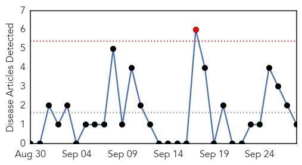
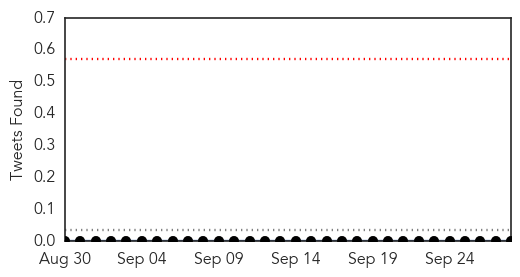
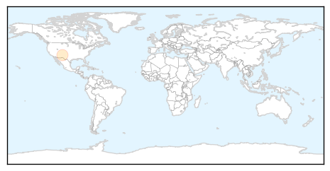
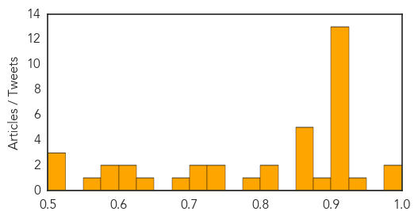

Hepatitis
30-Day Web Trend
1 alerts, 0 warnings

30-Day Twitter Trend
0 alerts, 0 warnings

Article Locations
Article Confidences

Top Articles:
Top Tweets:
-
No tweets found for Sep 28, 2014
Unknown
30-Day Web Trend
30-Day Twitter Trend
0 alerts, 0 warnings

Article Locations


Article Confidences
Top Articles:
- 0.990
- Virus probed in Colo. paralysis cases
- 0.989
- Virus probed in paralysis cases in 9 Colorado kids
- 0.947
- Virus probed in paralysis cases in 9 Colorado kids
- 0.917
- Chicago Tribune
- 0.917
- Chicago Tribune
- 0.917
- Chicago Tribune
- 0.917
- Chicago Tribune
- 0.917
- Chicago Tribune
- 0.917
- Chicago Tribune
- 0.917
- Chicago Tribune
- 0.917
- Chicago Tribune
- 0.917
- Chicago Tribune
- 0.917
- Chicago Tribune
- 0.917
- Chicago Tribune
- 0.917
- Chicago Tribune
- 0.910
- The world windows to Thailand
- 0.884
- ‘Vaccination is the only way out of a slow and painful death’
- 0.866
- Nusra Front says U.S.-led air strikes in Syria will fail
- 0.866
- Russia's Lavrov says ties with Washington need new "reset"
- 0.866
- Spanish architect Inaki Alonso install a solar panel on a beam over his central Madrid roof terrace
- 0.866
- File photo of a home with solar panels on its roof seen in a residential neighborhood in San Marcos
- 0.866
- German test pilot Scherdel steers the solar-powered Solar Impulse 2 aircraft during a training flight in Payerne
- 0.815
- UAE Haj pilgrims: Dubai health 'check' - Emirates 24
- 0.801
- Five babies test positive for TB in El Paso
- 0.783
- Summit County Animal Control urges pet vaccinations to prevent rabies
- 0.741
- ¿Qué pasa, Cincinnati? School board member has seen Hispanic culture take root in the Tri-State
- 0.729
- Texas Nurse Assistant Exposes Hundreds of Infants to Tuberculosis in a Year
- 0.702
- ECOWAS Health Ministers Issue Communique On Combating Ebola
- 0.701
- Clinical Review: Hyperthyroidism
- 0.688
- Awareness: Seminar held on World Rabies Day
- 0.632
- Texas A&M researcher develops new test to detect tuberculosis in minutes
- 0.613
- 5 babies test positive for TB after Texas nursery exposure
- 0.608
- 5 babies test positive for TB in Texas exposure
- 0.597
- Rand Water says restoration wil be gradual
- 0.596
- SGGP English Edition- HCMC has no report of surge of pinkeye patients
- 0.550
- Water restoration will be gradual says Rand Water
- 0.522
- 5 babies test positive for TB in Texas exposure
- 0.520
- “CVD made me vigilant to my health”
- 0.518
- Upper Boddington villagers told tap water now safe
Top Tweets:
-
No tweets found for Sep 28, 2014